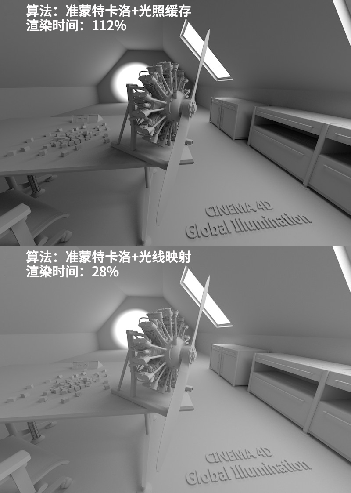

Function available in CINEMA 4D Prime, Visualize, Broadcast, Studio & BodyPaint 3D
Sample Renderings
Here you will find several sample renderings with various combinations of GI methods.
The following project is illuminated by a sky through two windows set up as GI portals and a Cinema 4D Spot light on the back wall. The only variances are the GI methods, whereby the remaining settings reflect median quality settings. Some renderings are spotty, which is something that can be improved with higher sampling.
Note that the render times are only indicators and can vary for other projects (the render time will also be reduced dramatically for IC+LM and QMC+LM if Build Radiosity Maps is enabled). 100% render time is the most precise method for QMC+QMC.
 |
 |  |
Compare the methods and note the following:
- How much faster the simplified Irradiance Cache is compared to QMC (as the primary method) for similar results.
- Interior spaces are rendered comparatively bright due to numerous light reflections when using light maps whereas …
- … the remaining secondary methods are darker even though they allow a maximum of 8 reflections and render longer.
- The precise shadows with QMC as primary method.
- How IC+QMC is prone to flickering.